⚡ Swift • TCA • AI • Metal • FPGA
Cutting-edge Apple ecosystem projects — from offline AI chat and neural Tetris to 3D RealityKit adventures and full‑stack Swift GraphQL.
Swift 6.0
The Composable Architecture
iCloud Sync
FPGA / Verilog
Neural Networks
LocalMind
iOS/iPad/macOS
Offline AI chat with Apple Intelligence • Liquid Glass UI •
streaming responses & LaTeX math rendering.
Screenshots:
dark.png
light.png
macos.png
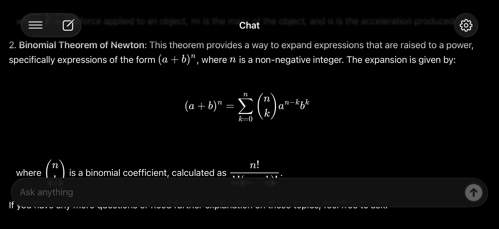
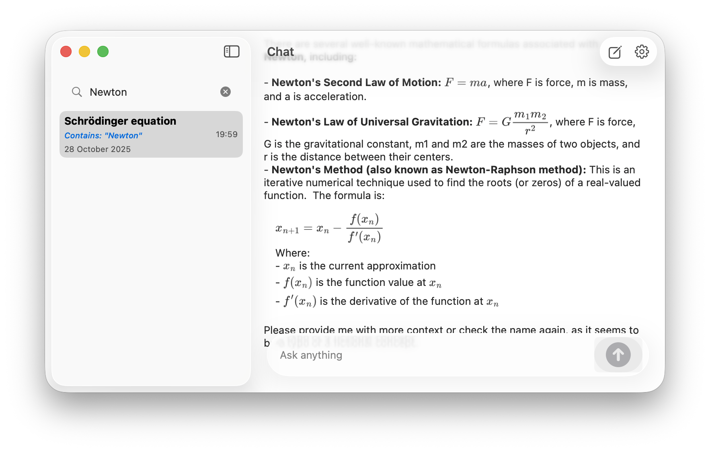
Swift 6TCAFoundation ModelsSQLiteCloudKit
- On‑device AI with async/await streaming
- iCloud cross-device sync & search
- LaTeX formulas & full‑text history
- Liquid Glass UI + haptic feedback
Tetris AI iPhone / SwiftUI
Classic Tetris with intelligent AI Demo Mode powered by neural
network & genetic algorithm.
Previews:
demo.png
demo.gif
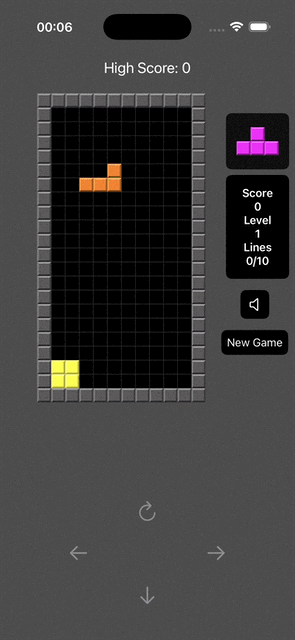
Swift 6TCANeural NetworkGenetic Algo
- AI‑driven demo using feature extraction
- 94% test coverage / genetic training
- Responsive swipe controls & high scores
- Self‑play optimization
FalloutPipBoy watchOS
Three unique watch faces: Fallout Pip-Boy, Rotating Seconds, Back
to the Future + HealthKit.
Demos:
demo.gif
demo1.gif
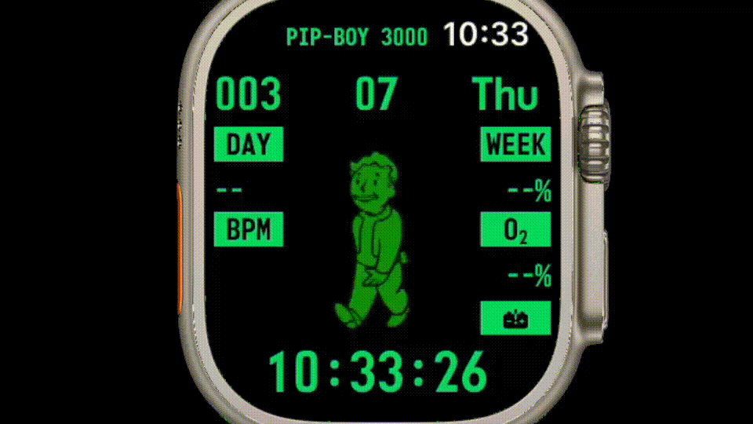
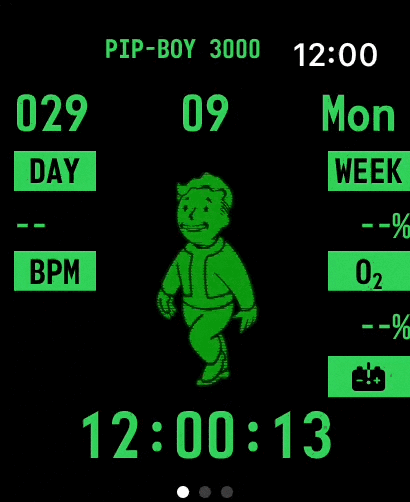
SwiftUIHealthKitSwift 6
- Retro‑futuristic Pip-Boy theme
- Real‑time health metrics (steps, heart)
- Rotating seconds & flux capacitor
- MainActor isolation + structured concurrency
StreamingAudio iOS + Metal
Online radio player with Metal‑powered visualizations, SwiftData
persistence & TCA.
Gallery:
demo.gif
player.png
list.png
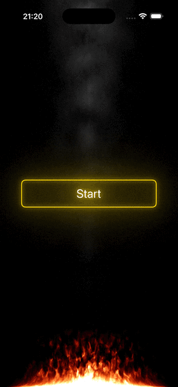
AVFoundationMetalSwiftData
- Live radio streaming & metadata
- Favorites library (SwiftData + iCloud)
- Metal shader animations / reactive UI
- Background audio & async/await
WritingPen iOS / macOS
Cross‑platform smooth handwriting animation: stroke‑by‑stroke text
reveal, SVG support.
Previews:
dark.gif
light.png
macos.png
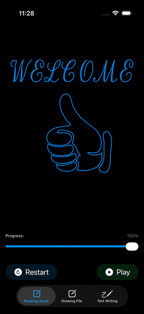
Core TextSwiftUICGPath
- Realistic pen tracking & trimmedPath
- Auto‑scaling text‑to‑path transformation
- Native macOS + iOS with platform fonts
- SVG asset rendering support
WalkingRecords Tracker + TCA
GPS route recorder with real‑time stats, MapKit, SwiftData & Metal
animation.
Views:
demo.gif
dark.png
light.png
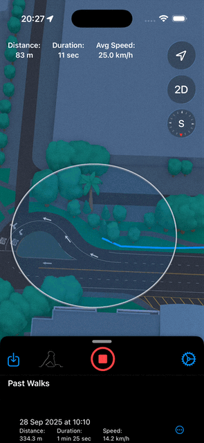
MapKitSwiftDataTCA
- Live route tracking & GPX export
- Distance / speed / duration analytics
- Background location updates (structured concurrency)
- Light/dark adaptive + demo mode
Marvel Dusting SpriteKit
Layer‑by‑layer disintegration effect inspired by Avengers:
Infinity War.
Effect:
demo.gif
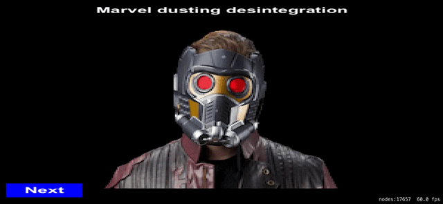
SpriteKitCore GraphicsSwift 6
- 16 disintegration layers + spiral chaos
- Tap to reassemble / smooth transitions
- Rotating dusting scene + cross‑fade
- Custom pixel-perfect particle generation
TM1638 FPGA
Verilog / Cyclone IV
Complete driver for TM1638 LED+Key module: 8-digit 7‑segment, 8
LEDs & 8 buttons.
Hardware:
fpga_board.jpg
demo.gif
TM1638_LED&KEYS.jpg
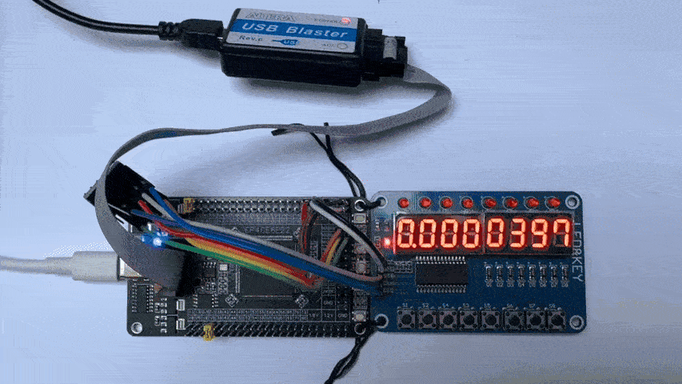
VerilogFPGAQuartus
- 8 key scanning + LED control
- Decimal counter (0-9 per digit)
- 50MHz clock / level shifter ready
- Low resource usage: ~396 LE
GraphQlExample
Vapor + GraphQL
Full‑stack Swift: Vapor GraphQL server + iOS client managing
launches & rockets.
UI:
demo.gif (client)
GraphQL schema
Swift 6Vapor 4GraphQLApollo iOS
- SQLite + Fluent ORM (async resolvers)
- CRUD mutations & strict concurrency
- SwiftUI client with @MainActor
- End‑to‑end Sendable & actor isolation
Abyssal‑6
RealityKit / Text‑Based
Deep‑sea text adventure with 3D character gallery, Reactor Puzzle,
and RealityKit carousel.
Captures:
ipad.jpg
sas.gif
win.gif


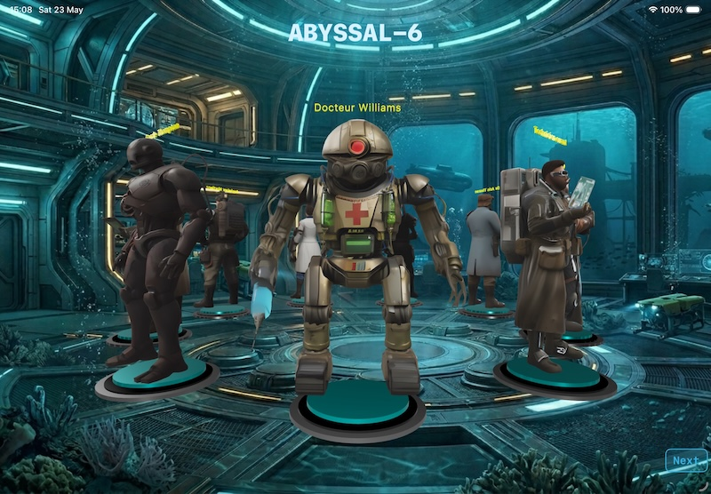
SwiftUIRealityKitAVAudioPlayer
- 3D rotating pedestal gallery (USDZ)
- Classic parser with touch context menus
- Millman theorem reactor puzzle & easter egg
- Multi‑language (EN, FR, DE) + i18n
Rick and Morty
iOS
SwiftUI app to explore characters from the Rick and Morty universe
— grid browsing, details, search & filter.
Gallery:
main.png
demo.gif
details.png

Swift 6TCASwiftDataREST API
- Dynamic character grid with status badges
- Rich detail view (episodes, origin, species)
- Search & real‑time filtering (Alive/Dead/Unknown)
- Light/dark mode adaptive & SwiftUI animations
- Offline caching with SwiftData + concurrency